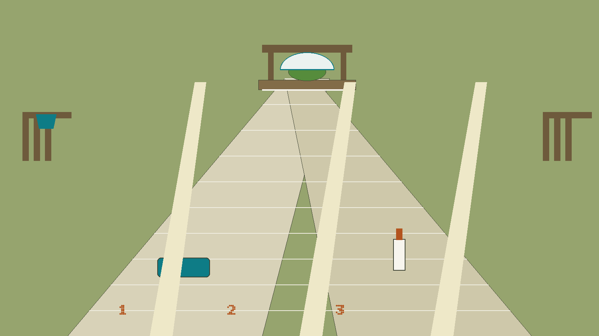
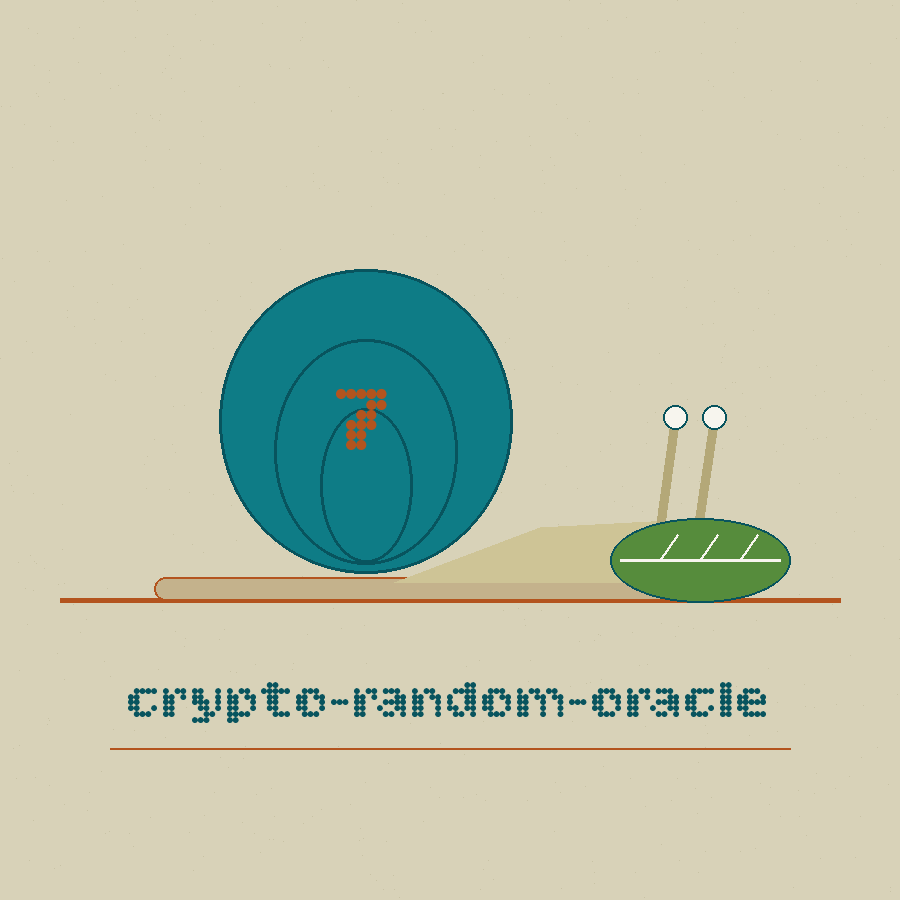
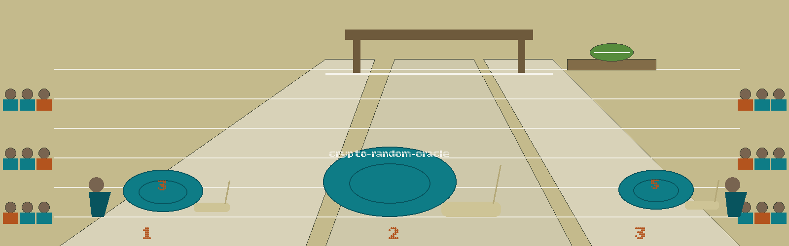

crypto-random-oracle: The Snail Racing Steward's Lettuce
Theme: The Snail Racing Steward's Lettuce. A race card of the printed kind, entry by entry in running order. Headings in Bitcount Prop Double, running text in Bitter.


What kind of thing this program is
A caller gives the program an input string, and the program answers with output bytes printed as hexadecimal text. The answer is derived, not drawn from a pool, not fetched from anywhere, and not, in the plain sense the repo name suggests, random at all once its conditions are fixed, because the same input under the same conditions produces the same bytes on every occasion. The only source of difference between runs is a salt that the program invents afresh when the caller does not supply one. The card states all of that in its opening entry, at full size.
Installation
The clone line is shown exactly as the README prints it, in the preserved record below, which is to say with the wrong organisation standing inside the code block. The card does not respell it quietly. A note here flags the fault in words: the install line and the licence line both carry a name that is not the organisation that holds this repo, and the count is kept in the generation record. A second note, marked as a repository fact, adds what the README installation never adds. The program cannot run on the standard library alone, because it imports the cryptography package, which a requirements file in the repo names with a minimum version of cryptography>=41.0.7, and no installation step for that package appears anywhere in the README.
Running form
Working form is python3 main.py, followed by the input control, which is required, followed by whichever of the remaining controls the caller wishes to set. A run without an input is refused by the parser before any output exists. Every control has both a short form and a long form in the parser, although the README lists the short forms only, a gap the card repairs here by naming both forms for every control it describes.
Controls, in parser order
Help, -h and --help, shows the help message and exits. Input, -i and --input, takes the input string and is required. Length, -l and --length, takes the requested output length in bytes and defaults to 32, and a length of zero or below is refused later in the program with a reason and a failure ending. Salt, -s and --salt, takes an optional salt string, and when none is provided a random salt of sixteen bytes is generated inside each call. Number of outputs, -n and --num_outputs, takes how many outputs to print for the same input and configuration, and it defaults to 1, and a count of zero or below is likewise refused. Key, -k and --key, takes an optional key string, and its presence changes the machinery entirely. Algorithm, -a and --algorithm, names the hash and defaults to SHA256, and the parser confines it to four choices: SHA256, SHA384, SHA512, and BLAKE2b.
The Fork in the Card
When no key is given, the output is produced by HKDF over the chosen hash, with the caller's salt when one is supplied and with a freshly generated salt when one is not, and with a fixed context label held in the code that ties every output of this tool to this one context. The requested length is handed to the derivation as it stands, so this path can answer lengths well beyond any single digest. For the BLAKE2b choice, the code asks that hash for its full 64 byte width whatever length was requested, because the derivation in this library refuses a narrower BLAKE2b.
Run it with a key
When a key is given, the output is a single HMAC digest over the input, cut down to the requested length when the digest is longer. A salt supplied beside a key does nothing at all, and the program warns in its log that the salt is not used in this mode. A requested length longer than the digest cannot be answered, and the run refuses with that reason rather than printing a short output and calling it done. The ceiling therefore moves with the algorithm, standing at the SHA256 digest width on the default setting and rising for the wider hashes. Nothing in this entry, and nothing anywhere on the page, prints a key, a salt value, or an output value.
Fixed Conditions, Identical Finishes
When a caller supplies a salt, or supplies a key, the conditions are fixed, and asking for several outputs prints the same line several times, identical in every character, which is expected behaviour. When a caller supplies neither, each call inside the run generates its own fresh salt, and the outputs differ from one another, and that difference, and only that difference, is where the resemblance to an oracle lives.
Where the Difference Lives
The program logs its configuration as it runs, including the input string itself in plain words, while recording of the key only whether one was provided, so a saved log from this program holds whatever input a caller typed. That handling fact is stated here as a behaviour only. A completed run prints its numbered outputs and ends in the ordinary way. A refused length, a refused count, an over long keyed request, or any other failure raised along the way is logged and ends the program with exit code 1. The parser's own refusals, a missing input or an algorithm outside the four choices, end the run before the program's own machinery begins. Licence closes the card. The README gives a copyright line in the wrong name and names no licence, and a separate licence file stands in the repo and is a MIT licence. Both facts are shown as they stand, and no holder line from that file is printed here.
Record preserved from the README
 # crypto-random-oracle Simulates a random oracle for cryptographic research and testing, outputting random values based on input with configurable entropy. - Focused on Basic cryptographic operations ## Install `git clone https://github.com/ShadowStrikeHQ/crypto-random-oracle` ## Usage `python3 main.py [params]` Without a key the output is HKDF over the chosen hash and can be any positive length. With `-k` the output is a single HMAC digest cut to the requested length, so the length cannot exceed the digest size (32 bytes for SHA256); a longer request fails with that reason instead of printing a short output. A salt has no effect in HMAC mode and the tool warns when one is supplied with a key. ## Parameters - `-h`: Show help message and exit - `-i`: The input string to the random oracle. - `-l`: The length of the output in bytes (default: 32). - `-s`: An optional salt for the random oracle. If not provided, a random salt is generated. - `-n`: Number of outputs to generate for the same input and configuration. - `-k`: An optional key for the HMAC. If not provided HMAC will not be used. - `-a`: Hash algorithm to use (default: SHA256). ## License Copyright (c) ShadowStrikeHQ
Facts from the code, stated in the prose
Facts from the code, stated in the prose. This record names: HKDF, HMAC, SHA256, SHA384, SHA512, BLAKE2b, cryptography>=41.0.7, -h, --help, -i, --input, -l, --length, -s, --salt, -n, --num_outputs, -k, --key, -a, --algorithm, exit code 1. The default output length is 32 bytes and the default number of outputs is 1. When no salt is supplied, a random salt of 16 bytes is generated inside each call. For BLAKE2b the code asks that hash for its full 64 byte width whatever length was requested. The program logs its input string in plain words, stated here as a behaviour only; no input value, key, salt value, or output value is printed on this page or in this record.